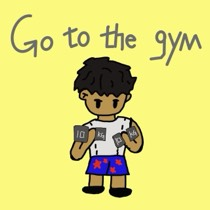
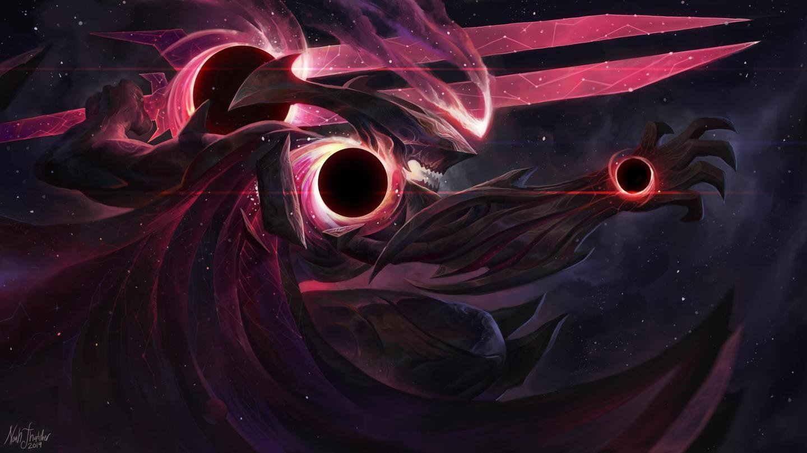
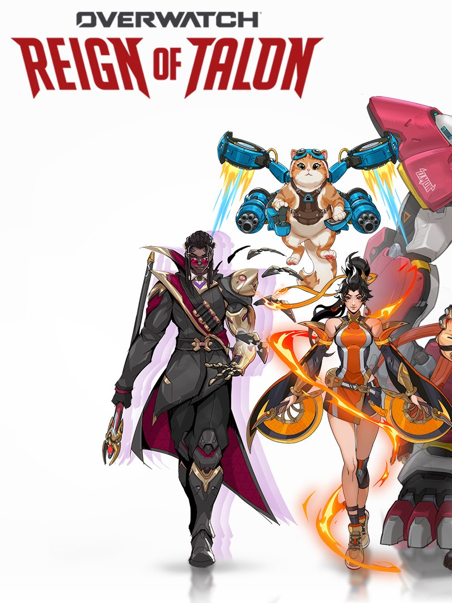

KASAI'S
Personal Space
Personal Space
日常把咖啡转化为代码，顺便把 Bug 写进系统里。
01 / Developer02 / Writer
FEATURED
DeepSeek AI产品经理面试全过程整理
B 的主张：站名之后必须再有第二档超大字号。主卡标题吃到 5.5rem 断崖，配墨底反相——这是全页视觉张力的来源，零新增素材。
项目3 个进入 →
游戏5 款进入 →
收藏1 条进入 →
游戏
5 款
英雄联盟 · 从 2011 年国服开服玩到现在，最近又捡回来了。 Counter-Strike 2
Counter-Strike 2
守望先锋Esports Manager 2026
 绝地求生
绝地求生最近更新
真实聚合2026-10-21DeepSeek AI产品经理面试全过程整理文章
2026-10-18我在玩的几个游戏，和为什么写在这文章
2026-10-18日期怎么会变成一长串文章
2026-10-15Ties · 私有、单人使用的本地关系管理系统项目
—英雄联盟 · 补刀手感和资源判断都还在游戏